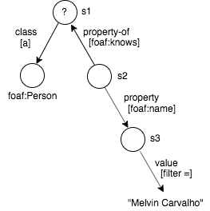
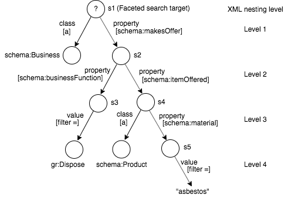

FacetJsClient - API
2021-Feb-09
CMSB
A Javascript client for the Virtuoso Faceted Browsing Service.
FacetJsClient is a Javascript interface to Virtuoso's /fct/service. It aims to be a client library with no UI dependencies with a view to it being usable by any UI framework. FacetReactClient provides a React-based UI to the Virtuoso Faceted Browsing Service, using FacetJsClient for its underpinnings.
See also:
- Source code: GitHub: FacetJsClient
General Approach
The client library includes two main classes: FctQuery and FctResult.
FctQuery builds an XML request body for execution by /fct/service. The XML request payload is described by Faceted Browsing Service. Different elements and attributes of the XML payload are created, read, updated or deleted by various FctQuery methods and accessors. The general approach is to use JQuery for manipulating the input XML. To submit the XML request and execute the contained query, use FctQuery#execute. On successful execution, FctQuery#execute returns a FctResult object.
FctResult holds the XML response in property xml. Rather than use JQuery to retrieve values from the XML, the response is also converted to a Javascript object using JXON, to allow for easy consumption by a JS client application. This Javascript object is accessible through property json. Different properties of the Javascript object, corresponding to different XML elements in the XML response, can be retrieved through various FctResult accessors.
FctQuery#execute actually returns a Promise which, when fulfilled, returns a FctResult. To trigger FctQuery#execute from an event handler, use something like:
$('button').on('click', function() {
fctQuery.execute()
.then(fctResult => {
... display the query result ...
})
.catch(err => {
$('.fct_qry_status')
.text('The Facet query failed: ' + err.message)
.addClass('error');
})
})
Sparql Query Generation
Examples of Facet input XML and the corresponding generated SPARQL queries are shown below. Each nesting level in the input XML introduces a new SPARQL variable: ?s1, ?s2 ... ?sN, where N corresponds to the nesting level.
?s1 identifies the set of matching entities found by the faceted search. The other ?sN (N > 1) express the faceted search filter criteria, but aren't the primary entities being searched for.
Example 1
Input XML
<?xml version="1.0"?>
<query xmlns="http://openlinksw.com/services/facets/1.0">
<!-- Nesting level 1: implied variable ?s1 -->
<class iri="http://xmlns.com/foaf/0.1/Person" />
<property iri="http://xmlns.com/foaf/0.1/knows">
<-- Nesting level 2: Implied variable ?s2 -->
<property iri="http://xmlns.com/foaf/0.1/name">
<-- Nesting level 3: Implied variable ?s3 -->
<value>"Kingsley Idehen"</value>
</property>
</property>
<view type="list" limit="100" />
</query>
Query meta graph

Generated SPARQL query
select ?s1 as ?c1 where
{
?s1 a <http://xmlns.com/foaf/0.1/Person> .
?s1 <http://xmlns.com/foaf/0.1/knows> ?s2 .
?s2 <http://xmlns.com/foaf/0.1/name> ?s3 .
filter (?s3 = "Kingsley Idehen") .
}
group by (?s1)
order by desc (<LONG::IRI_RANK> (?s1))
limit 100
Example 2
Input XML
<?xml version="1.0"?>
<query xmlns="http://openlinksw.com/services/facets/1.0">
<!-- Nesting level 1: implied variable ?s1 -->
<class iri="http://xmlns.com/foaf/0.1/Person" />
<property-of iri="http://xmlns.com/foaf/0.1/knows">
<-- Nesting level 2: Implied variable ?s2 -->
<property iri="http://xmlns.com/foaf/0.1/name">
<-- Nesting level 3: Implied variable ?s3 -->
<value>"Melvin Carvalho"</value>
</property>
</property-of>
<view type="list" limit="100" />
</query>
Query meta graph

Generated SPARQL query
select ?s1 as ?c1
where
{
?s1 a <http://xmlns.com/foaf/0.1/Person> .
?s2 <http://xmlns.com/foaf/0.1/knows> ?s1 .
?s2 <http://xmlns.com/foaf/0.1/name> ?s3 .
filter (?s3 = "Melvin Carvalho") .
}
group by (?s1)
order by desc (<LONG::IRI_RANK> (?s1))
limit 100
Example 3
Input XML
<?xml version="1.0"?>
<query xmlns="http://openlinksw.com/services/facets/1.0">
<!-- Nesting level 1: implied variable ?s1 -->
<class iri="http://schema.org/Business" />
<property iri="http://schema.org/makesOffer">
<!-- Nesting level 2: implied variable ?s2 -->
<property iri="http://schema.org/businessFunction">
<!-- Nesting level 3.1: implied variable ?s3 -->
<value datatype="uri">http://purl.org/goodrelations/v1#Dispose</value>
</property>
<property iri="http://schema.org/itemOffered">
<!-- Nesting level 3.2: implied variable ?s4 -->
<class iri="http://schema.org/Product" />
<property iri="http://schema.org/material">
<!-- Nesting level 4: implied variable ?s5 -->
<value>"asbestos"</value>
</property>
</property>
</property>
<view type="list" limit="100" />
</query>
Query meta graph

Generated SPARQL query
select ?s1 as ?c1 where {
?s1 a <http://schema.org/Business> .
?s1 <http://schema.org/makesOffer> ?s2 .
?s2 <http://schema.org/businessFunction> ?s3 .
filter (?s3 = <http://purl.org/goodrelations/v1#Dispose>) .
?s2 <http://schema.org/itemOffered> ?s4 .
?s4 a <http://schema.org/Product> .
?s4 <http://schema.org/material> ?s5 .
filter (?s5 = "asbestos") .
}
group by (?s1)
order by desc (<LONG::IRI_RANK> (?s1))
limit 100
DTD for Facet Service Input XML
<!ELEMENT query (text?,class*,property*,property-of*,value?,view?,cond?)>
<!ELEMENT text (#PCDATA)>
<!ELEMENT class EMPTY>
<!ELEMENT property (class*|property*|property-of*|value?|view?)>
<!ELEMENT property-of (class*|property*|property-of*|value?|view?)>
<!ELEMENT value (#PCDATA)>
<!--
When element <value> occurs as a child of property-of, it
must be datatype 'uri' (xsd:anyURI). The subject of the property to
which 'property-of' refers must be an entity (a resource), not a
literal; so the value's type must be 'uri'. This element has the
effect of constraining the entity's URI to the specified value.
-->
<!ELEMENT view EMPTY>
<!--
Element <view> may occur as a child of a <query>, <property> or
<property-of> element but may occur only once in the document.
<view> specifies which subject is presented in the result set.
-->
<!ATTLIST query
graph CDATA #IMPLIED
timeout CDATA #IMPLIED
inference CDATA #IMPLIED
same-as CDATA #IMPLIED
>
<!ATTLIST view
type (classes|geo|geo-list|list|list-count|
properties|properties-in|propval-list|text|text-d|text-properties) #REQUIRED
limit CDATA #IMPLIED
offset CDATA #IMPLIED
>
<!ATTLIST text
property CDATA #IMPLIED
>
<!ATTLIST text-d
property CDATA #IMPLIED
>
<!ATTLIST class
iri CDATA #IMPLIED
exclude yes #IMPLIED
inference CDATA #IMPLIED
>
<!ATTLIST property
iri CDATA #REQUIRED
same_as yes #IMPLIED
inference CDATA #IMPLIED
>
<!ATTLIST property-of
iri CDATA #REQUIRED
same_as yes #IMPLIED
inference CDATA #IMPLIED
>
<!--
-- value and cond perform similar functions.
-->
<!ATTLIST value
datatype CDATA #IMPLIED
xml:lang CDATA #IMPLIED
op (=|<|>|<=|>=) "="
>
<!ATTLIST cond
datatype CDATA #IMPLIED
xml:lang CDATA #IMPLIED
op (=|<|>|<=|>=) "="
neg 1 #IMPLIED
>